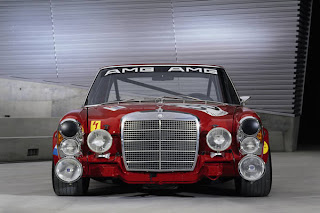

Faszinaton
Pequenos detalhes, pormenores de engenharia e características de época ajudam a explicar porque é que o W115 continua a exercer tanto fascínio décadas depois do seu lançamento.
O encanto deste modelo não está apenas na linha clássica ou na robustez mecânica. Está também nos detalhes: no desenho da grelha, na estrela sobre o capot, no tacto do volante, no som das portas a fechar e no ambiente interior tão característico da Mercedes-Benz desta época.
Faszinaton: é precisamente essa soma de presença, carácter e identidade que transforma um automóvel clássico em algo memorável.

Nesta secção reúnem-se alguns desses pormenores que tornam o W115 especial — não apenas como automóvel, mas como objecto de design, engenharia e memória.